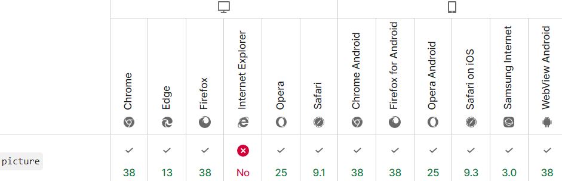

HTML-элемент <picture> служит контейнером для одного или более элементов <source> и одного элемента <img> для обеспечения оптимальной версии изображения для различных размеров экрана.
Эта конструкция позволяет выводить то или иное изображение в зависимости от условий.
Браузер рассмотрит каждый из дочерних элементов <source> и выберет один, соответствующий лучшему совпадению; если совпадений среди элементов <source> найдено не будет, то будет выбран файл, указанный атрибутом src элемента <img>.
HTML тег <picture> парный, содержимое записывается между открывающим (<picture>) и закрывающим (</picture>) тегами.
Элемент <picture> может содержать один и более элементов <source> и один элемент <img>, который является последним дочерним элементом в блоке.
<picture>
<source media="...">
<source media="...">
<img src="...">
</picture>
| Атрибут | Описание | Пример |
| media | Условие при котором буде выводиться именно этот тег source, а конкретно именно то изображение, которое в нем прописано | |
| srcset | В атрибуте srcset через запятую перечисляются строки, которые дают браузеру информацию об изображениях. Каждая строка состоит из следующих частей:
|
Эта запись означает, что для экранов с обычной плотностью пикселей будет использовано изображение 640x480.png, а для экранов с удвоенной плотностью пикселей (например, для retina-экранов) — 1280x960.png. |
| type | Содержит указание на MIME-тип медиафайла. Если у нас есть несколько одинаковых видеофайлов разного формата, то атрибут type помогает выбрать первый поддерживаемый браузером. |
В показанный выше пример включены три типа изображений в форматах avif, webp и png. Сначала браузер попробует формат avif, если не получится, то попробует webp. Если браузер не поддерживает ни один из них, то использует изображение png.
|
| sizes | Атрибут sizes говорит браузеру, какой ширины нам понадобится изображение из текущего элемента |
Атрибуты srcset и sizes эффективно работают в паре. Рассмотрим пример:
|
Для этого элемента доступны глобальные атрибуты и события.
